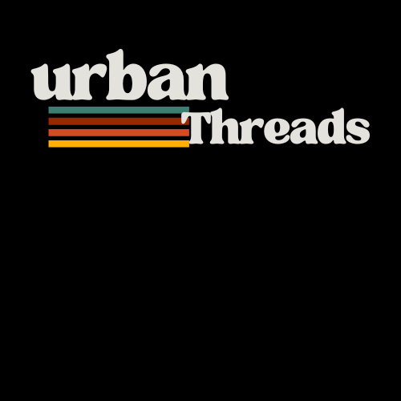

 Home Product About us Contact
Welcome to Urban Threads – where style meets the streets.
We’re all about creating clothes that are fresh, comfortable, and full of attitude. Designed for the youth and inspired by the hustle of city life, our pieces let you be yourself and stand out at the same time.
From everyday fits to statement looks, we bring you affordable fashion that keeps up with your vibe — whether you’re chilling with friends, hitting a gig, or just owning your day.
At Urban Threads, it’s not just clothing.
It’s a lifestyle, a mood, and a movement.
So throw on your threads, step out, and make the city your runway.